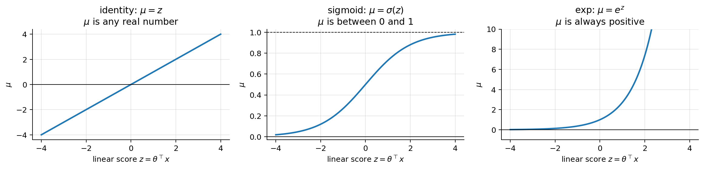
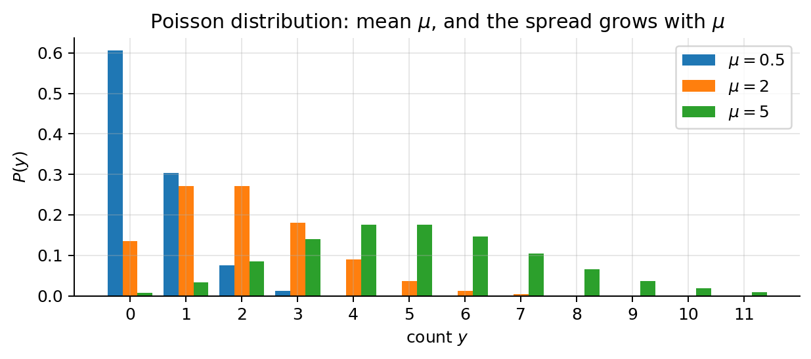
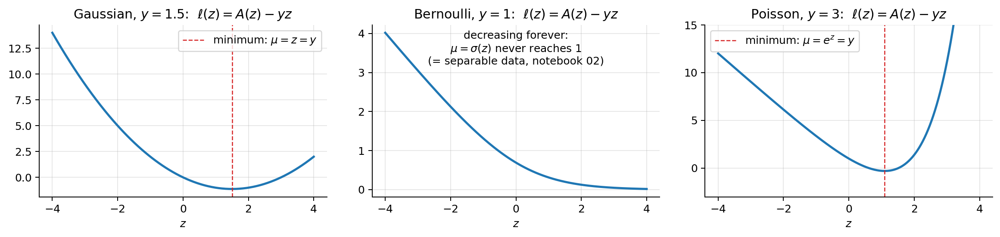
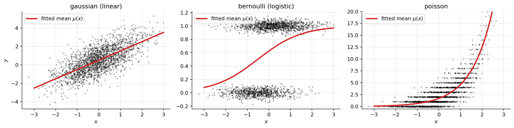
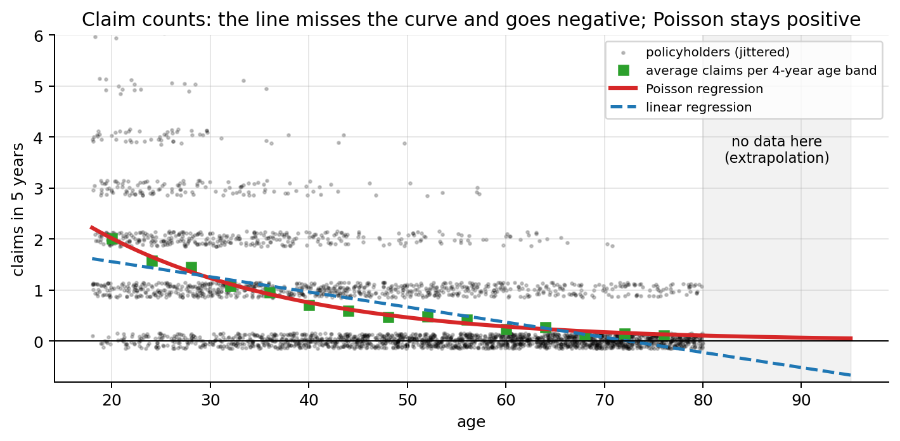

import numpy as np
import matplotlib.pyplot as plt
plt.rcParams.update({"figure.dpi": 90, "axes.grid": True, "grid.alpha": 0.3,
"axes.spines.top": False, "axes.spines.right": False})
rng = np.random.default_rng(7)02b · Generalised Linear Models (GLMs)
Notebooks 01 and 02 look different (a line vs. an S-curve, MSE vs. cross-entropy), but they are the same recipe with one ingredient swapped. This notebook names that recipe and uses it to build a third model, Poisson regression, for counts (e.g. number of claims per policy).
Softmax regression (notebook 04) is one more member of the family.
1. Side by side
| Linear regression (01) | Logistic regression (02) | |
|---|---|---|
| target \(y\) | any real number | 0 or 1 |
| linear score | \(z = \boldsymbol{\theta}^\top\mathbf{x}\) | \(z = \boldsymbol{\theta}^\top\mathbf{x}\) |
| prediction \(h_{\boldsymbol{\theta}}(\mathbf{x})\) | \(z\) | \(\sigma(z)\) |
| what the prediction means | mean of \(y\) | \(P(y=1)\) = mean of \(y\) |
| noise model | Gaussian | Bernoulli |
| loss | MSE = \(-\log\) Gaussian likelihood | cross-entropy = \(-\log\) Bernoulli likelihood |
| gradient | \(\frac1m\mathbf{X}^\top(h - \mathbf{y})\) | \(\frac1m\mathbf{X}^\top(h - \mathbf{y})\) |
Three things stayed the same: - a linear score \(z = \boldsymbol{\theta}^\top\mathbf{x}\), - the prediction is the mean of \(y\) (for 0/1 labels the mean is \(P(y=1)\)), - the gradient has the form (prediction − target) × input.
Two things changed, and they always change together: - the distribution of \(y\) (Gaussian → Bernoulli), - the function that turns \(z\) into a prediction (identity → sigmoid).
2. The recipe: three ingredients
A GLM is specified by answering three questions.
- What kind of number is \(y\)? Pick a distribution for \(y\) given \(\mathbf{x}\) that produces that kind of number, with mean \(\mu\).
- real numbers → Gaussian
- 0/1 → Bernoulli
- counts \(0, 1, 2, \dots\) → Poisson
- Linear score. \(z = \boldsymbol{\theta}^\top\mathbf{x}\) (always the same).
- Link. Connect the two: \(\mu = g^{-1}(z)\), where \(g^{-1}\) maps any real number into the allowed range of \(\mu\). (\(g\) itself is called the link function; \(g^{-1}\) is the inverse link, the one we actually compute with.)
| model | \(y\) | distribution | allowed \(\mu\) | prediction \(\mu = g^{-1}(z)\) | link \(g(\mu) = z\) |
|---|---|---|---|---|---|
| linear regression | real | Gaussian | \((-\infty, \infty)\) | \(z\) | identity: \(\mu\) |
| logistic regression | 0/1 | Bernoulli | \((0, 1)\) | \(\sigma(z) = \frac{1}{1+e^{-z}}\) | logit: \(\log\frac{\mu}{1-\mu}\) |
| Poisson regression | count | Poisson | \((0, \infty)\) | \(e^{z}\) | log: \(\log\mu\) |
That’s all a GLM is: a linear score, pushed through a function so it lands in the right range, used as the mean of the right distribution.
3. Why we need a link
The linear score \(z\) can be any real number. The mean \(\mu\) often cannot: - a probability must be in \((0,1)\), - an expected number of claims must be \(> 0\).
The inverse link squashes or stretches \(\mathbb{R}\) onto exactly the allowed range, so the model can never predict something impossible, no matter what \(\mathbf{x}\) is.
z = np.linspace(-4, 4, 300)
fig, axes = plt.subplots(1, 3, figsize=(13, 3.3))
for ax, f, name, rng_txt in [(axes[0], z, r"identity: $\mu = z$", "any real number"),
(axes[1], 1 / (1 + np.exp(-z)), r"sigmoid: $\mu = \sigma(z)$", "between 0 and 1"),
(axes[2], np.exp(z), r"exp: $\mu = e^z$", "always positive")]:
ax.plot(z, f, lw=2); ax.axhline(0, color="k", lw=0.8)
ax.set_title(f"{name}\n$\\mu$ is {rng_txt}"); ax.set_xlabel(r"linear score $z=\theta^\top x$"); ax.set_ylabel(r"$\mu$")
axes[1].axhline(1, color="k", lw=0.8, ls="--"); axes[2].set_ylim(-1, 10)
plt.tight_layout(); plt.show()
4. The loss is always minus the log-likelihood
Same rule as in notebooks 01 and 02: write the probability of each observed \(y\) under the model, take \(-\log\), average. Per example, with \(\mu = g^{-1}(\boldsymbol{\theta}^\top\mathbf{x})\):
| distribution | \(P(y \mid \mu)\) | per-example loss \(\ell = -\log P\) (dropping constants) |
|---|---|---|
| Gaussian (\(\sigma = 1\)) | \(\frac{1}{\sqrt{2\pi}}e^{-(y-\mu)^2/2}\) | \(\frac12(\mu - y)^2\) → MSE |
| Bernoulli | \(\mu^y(1-\mu)^{1-y}\) | \(-y\log\mu - (1-y)\log(1-\mu)\) → cross-entropy |
| Poisson | \(\frac{\mu^y e^{-\mu}}{y!}\) | \(\mu - y\log\mu\) → Poisson loss |
“Dropping constants” means dropping terms that don’t depend on \(\boldsymbol{\theta}\) (like \(\log\sqrt{2\pi}\) or \(\log y!\)), which don’t move the minimum.
The Poisson distribution in one line: if events happen independently at an average rate of \(\mu\) per period, the number \(y\) that happens in one period has \(P(y) = \mu^y e^{-\mu}/y!\). Its mean is \(\mu\) and, notably, its variance is also \(\mu\): the more claims you expect, the more the actual count varies.
from scipy.stats import poisson
fig, ax = plt.subplots(figsize=(7, 3.2))
k = np.arange(0, 12)
for i, mu in enumerate([0.5, 2, 5]):
ax.bar(k + (i - 1) * 0.27, poisson.pmf(k, mu), width=0.27, label=rf"$\mu={mu}$")
ax.set_xlabel("count $y$"); ax.set_ylabel("$P(y)$"); ax.set_xticks(k); ax.legend()
ax.set_title("Poisson distribution: mean $\\mu$, and the spread grows with $\\mu$")
plt.tight_layout(); plt.show()
5. The gradient is always (prediction − target) × input
Write \(z = \boldsymbol{\theta}^\top\mathbf{x}\) and use the chain rule \(\frac{\partial\ell}{\partial\theta_j} = \frac{\partial\ell}{\partial z}\cdot\frac{\partial z}{\partial\theta_j} = \frac{\partial\ell}{\partial z}\cdot x_j\). So we only need \(\partial\ell/\partial z\) for each model. Put \(\mu\) in terms of \(z\) first:
Gaussian. \(\mu = z\), \(\;\ell = \frac12(z - y)^2\), \(\;\frac{\partial\ell}{\partial z} = z - y = \mu - y\).
Bernoulli. \(\mu = \sigma(z)\). Shown in notebook 02, section 5: \(\;\frac{\partial\ell}{\partial z} = \mu - y\).
Poisson. \(\mu = e^z\), so \(\log\mu = z\) and \(\;\ell = e^z - y\,z\), \(\;\frac{\partial\ell}{\partial z} = e^z - y = \mu - y\).
In all three cases:
\[ \boxed{\frac{\partial\ell}{\partial z} = \mu - y \qquad\Longrightarrow\qquad \nabla_{\boldsymbol{\theta}} J = \frac{1}{m}\sum_{i=1}^m \big(\mu^{(i)} - y^{(i)}\big)\,\mathbf{x}^{(i)} = \frac1m \mathbf{X}^\top(\boldsymbol{\mu} - \mathbf{y})} \]
Why does it come out so clean? Because we paired each distribution with its “natural” link (the canonical link): identity for Gaussian, logit for Bernoulli, log for Poisson. With these pairs, the derivative of the link and the derivative of the log-likelihood cancel each other out. (Other pairings are allowed, e.g. a log link with a Gamma distribution for claim amounts, but the gradient gets an extra factor.)
6. One proof for all: convexity
All three losses can be written in the same shape. With \(z = \boldsymbol{\theta}^\top\mathbf{x}\):
\[ \ell(z) = A(z) - y\,z, \qquad \begin{array}{c|c|c|c} & A(z) & A'(z) = \mu & A''(z) \\\hline \text{Gaussian} & \tfrac12 z^2 & z & 1 \\ \text{Bernoulli} & \log(1 + e^{z}) & \sigma(z) & \mu(1-\mu) \\ \text{Poisson} & e^{z} & e^{z} & \mu \end{array} \]
(Check Gaussian: \(\frac12 z^2 - yz = \frac12(z-y)^2 - \frac12y^2\), the MSE up to a constant. Check Bernoulli: \(\log(1+e^z) - yz\) is exactly the cross-entropy written in terms of \(z\).)
Two facts fall out immediately:
- Gradient. \(\ell'(z) = A'(z) - y = \mu - y\) (section 5 again, in one line).
- Curvature. \(\ell''(z) = A''(z)\), and in every row \(A''(z) \ge 0\). It is, in fact, the variance of \(y\): \(1\) for the Gaussian (we set \(\sigma=1\)), \(\mu(1-\mu)\) for Bernoulli, \(\mu\) for Poisson. A variance can’t be negative.
Going from \(z\) to \(\boldsymbol{\theta}\) (same step as notebooks 01 and 02):
\[ \nabla^2 J(\boldsymbol{\theta}) = \frac1m\sum_{i=1}^m A''(z^{(i)})\,\mathbf{x}^{(i)}\mathbf{x}^{(i)\top}, \qquad \mathbf{v}^\top\nabla^2 J\,\mathbf{v} = \frac1m\sum_{i=1}^m \underbrace{A''(z^{(i)})}_{\ge 0}\big(\mathbf{v}^\top\mathbf{x}^{(i)}\big)^2 \ge 0 . \]
So every GLM with its canonical link has a convex loss: any point with zero gradient is a global minimum, and gradient descent can’t get stuck. \(\blacksquare\)
The one-parameter picture from notebook 01’s warm-up still holds: \(\ell(z)\) is a bowl in \(z\), with the bottom where \(\mu = y\).
z = np.linspace(-4, 4, 300)
losses = [("Gaussian, $y=1.5$", 0.5 * z**2 - 1.5 * z),
("Bernoulli, $y=1$", np.log1p(np.exp(z)) - 1 * z),
("Poisson, $y=3$", np.exp(z) - 3 * z)]
fig, axes = plt.subplots(1, 3, figsize=(13, 3.2))
for ax, (name, l) in zip(axes, losses):
ax.plot(z, l, lw=2); ax.set_title(name + r": $\ell(z)=A(z)-yz$"); ax.set_xlabel("$z$")
axes[0].axvline(1.5, color="C3", ls="--", lw=1, label=r"minimum: $\mu=z=y$"); axes[0].legend()
axes[2].axvline(np.log(3), color="C3", ls="--", lw=1, label=r"minimum: $\mu=e^z=y$"); axes[2].legend()
axes[1].text(0, 3.2, "decreasing forever:\n$\\mu=\\sigma(z)$ never reaches 1\n(= separable data, notebook 02)", ha="center")
axes[2].set_ylim(-3, 15)
plt.tight_layout(); plt.show()
7. One gradient-descent function fits all three models
Since the gradient is always \(\frac1m\mathbf{X}^\top(\boldsymbol{\mu} - \mathbf{y})\), a GLM fitter only needs to know the inverse link. Everything else is identical.
inverse_links = {
"gaussian (linear)": lambda z: z,
"bernoulli (logistic)": lambda z: 1 / (1 + np.exp(-z)),
"poisson": lambda z: np.exp(z),
}
def fit_glm(X, y, inv_link, alpha=0.1, n_iters=5000):
theta = np.zeros(X.shape[1])
for _ in range(n_iters):
mu = inv_link(X @ theta) # prediction = mean of y
theta -= alpha * X.T @ (mu - y) / len(y) # (prediction - target) x input
return theta
# Same x, three kinds of target, all generated from z = 0.5 + 1.0 x
m = 2000
x = rng.normal(0, 1, m)
X = np.c_[np.ones(m), x]
z_true = 0.5 + 1.0 * x
targets = {
"gaussian (linear)": z_true + rng.normal(0, 1, m),
"bernoulli (logistic)": rng.binomial(1, 1 / (1 + np.exp(-z_true))),
"poisson": rng.poisson(np.exp(z_true)),
}
from sklearn.linear_model import LinearRegression, LogisticRegression, PoissonRegressor
sk_models = {"gaussian (linear)": LinearRegression(),
"bernoulli (logistic)": LogisticRegression(C=1e10),
"poisson": PoissonRegressor(alpha=0, max_iter=1000)}
print(f"{'model':>22} | {'true theta':>12} | {'our fit_glm':>14} | {'sklearn':>14}")
fig, axes = plt.subplots(1, 3, figsize=(14, 3.6))
g = np.linspace(-3, 3, 200)
for ax, (name, y) in zip(axes, targets.items()):
th = fit_glm(X, y, inverse_links[name])
sk = sk_models[name].fit(x[:, None], y)
sk_th = np.r_[np.ravel(sk.intercept_), np.ravel(sk.coef_)]
print(f"{name:>22} | {'[0.5, 1.0]':>12} | {str(th.round(3)):>14} | {str(sk_th.round(3)):>14}")
ax.scatter(x, y + (rng.normal(0, 0.05, m) if name != "gaussian (linear)" else 0), s=3, alpha=0.25, color="k")
ax.plot(g, inverse_links[name](th[0] + th[1] * g), "C3", lw=2.5, label=r"fitted mean $\mu(x)$")
ax.set_title(name); ax.set_xlabel("$x$"); ax.legend(loc="upper left")
axes[0].set_ylabel("$y$"); axes[2].set_ylim(-0.5, 20)
plt.tight_layout(); plt.show() model | true theta | our fit_glm | sklearn
gaussian (linear) | [0.5, 1.0] | [0.505 1.008] | [0.505 1.008]
bernoulli (logistic) | [0.5, 1.0] | [0.508 0.988] | [0.508 0.988]
poisson | [0.5, 1.0] | [0.533 0.996] | [0.533 0.996]
The same six lines of fit_glm recover the true parameters in all three cases and agree with scikit-learn. The only thing that changed between models is one function.
(For the Poisson model we kept \(\alpha\) small: because \(e^z\) grows fast, a large step can overshoot badly. Standardising the features helps, exactly as in notebook 01.)
8. Worked example: Poisson regression for claim counts
Problem. For each policyholder we know their age and the number of claims they made over the last 5 years (\(y = 0, 1, 2, \dots\)). We want the expected number of claims as a function of age, e.g. to price the policy. (The data below is synthetic.)
Why not linear regression? - A straight line can predict a negative number of claims. - Effects on counts are naturally multiplicative (“10 more years of age → 40 % fewer claims”), not additive (“→ 0.3 fewer claims”, which is huge for a low-risk group and tiny for a high-risk one). - The noise is not constant: counts vary more where the mean is larger (Poisson variance \(= \mu\)).
Poisson regression answers all three: \(\mu = e^{\theta_0 + \theta_1\,\text{age}}\) is always positive, and \(\theta_1\) acts multiplicatively (section 9).
m = 3000
age = rng.uniform(18, 80, m)
mu_true = np.exp(0.8 - 0.05 * (age - 18)) # young drivers: ~2.2 claims in 5 years; 80-year-olds: ~0.1
claims = rng.poisson(mu_true)
# standardise age for gradient descent, then convert the slope back to "per year"
a_mean, a_sd = age.mean(), age.std()
Xa = np.c_[np.ones(m), (age - a_mean) / a_sd]
th = fit_glm(Xa, claims, inverse_links["poisson"], alpha=0.1, n_iters=5000)
slope_per_year = th[1] / a_sd
intercept_age0 = th[0] - th[1] * a_mean / a_sd # so that mu = exp(intercept_age0 + slope_per_year * age)
print(f"slope per year of age: {slope_per_year:.4f} (true: -0.05)")
lin = LinearRegression().fit(age[:, None], claims)
g = np.linspace(18, 95, 300)
bins = np.arange(18, 81, 4); centers = (bins[:-1] + bins[1:]) / 2
bin_means = [claims[(age >= lo) & (age < hi)].mean() for lo, hi in zip(bins[:-1], bins[1:])]
fig, ax = plt.subplots(figsize=(8, 4))
ax.scatter(age, claims + rng.uniform(-0.15, 0.15, m), s=3, alpha=0.2, color="k", label="policyholders (jittered)")
ax.plot(centers, bin_means, "s", color="C2", ms=6, label="average claims per 4-year age band")
ax.plot(g, np.exp(intercept_age0 + slope_per_year * g), "C3", lw=2.5, label="Poisson regression")
ax.plot(g, lin.intercept_ + lin.coef_[0] * g, "C0", lw=2, ls="--", label="linear regression")
ax.axhline(0, color="k", lw=0.8); ax.axvspan(80, 95, color="gray", alpha=0.1)
ax.text(87.5, 3.5, "no data here\n(extrapolation)", ha="center", fontsize=9)
ax.set_xlabel("age"); ax.set_ylabel("claims in 5 years"); ax.set_ylim(-0.8, 6); ax.legend(loc="upper right", fontsize=8)
ax.set_title("Claim counts: the line misses the curve and goes negative; Poisson stays positive")
plt.tight_layout(); plt.show()
print(f"prediction at age 90: linear = {lin.predict([[90]])[0]:+.2f} claims Poisson = {np.exp(intercept_age0 + slope_per_year * 90):.2f} claims")slope per year of age: -0.0491 (true: -0.05)
prediction at age 90: linear = -0.52 claims Poisson = 0.06 claimsExposure (common in insurance). If policyholders were observed for different lengths of time \(t^{(i)}\), the expected count is rate × time: \(\mu^{(i)} = t^{(i)}\,e^{\boldsymbol{\theta}^\top\mathbf{x}^{(i)}}\), i.e. \(\log\mu^{(i)} = \log t^{(i)} + \boldsymbol{\theta}^\top\mathbf{x}^{(i)}\). The term \(\log t^{(i)}\) is added to the score with a fixed coefficient of 1 (an offset). In scikit-learn the equivalent is to fit \(y/t\) with sample_weight=t.
9. Interpreting the coefficients
The link decides how a coefficient acts. Increase \(x_j\) by one unit, others fixed: the score \(z\) goes up by \(\theta_j\). What happens to the prediction?
| model | link | \(+1\) in \(x_j\) does this to the prediction | name |
|---|---|---|---|
| linear | identity | adds \(\theta_j\) to \(\mu\) | slope |
| logistic | logit | multiplies the odds \(\frac{\mu}{1-\mu}\) by \(e^{\theta_j}\) | odds ratio |
| Poisson | log | multiplies \(\mu\) by \(e^{\theta_j}\) | rate ratio |
Proof for Poisson: \(\mu(x_j + 1) = e^{\dots + \theta_j(x_j + 1)} = e^{\dots + \theta_j x_j}\cdot e^{\theta_j} = \mu(x_j)\cdot e^{\theta_j}\).
For the claims example:
print(f"theta_age = {slope_per_year:.4f} per year")
print(f" +1 year of age -> expected claims x {np.exp(slope_per_year):.3f} ({100 * (np.exp(slope_per_year) - 1):+.1f} %)")
print(f" +10 years of age -> expected claims x {np.exp(10 * slope_per_year):.3f} ({100 * (np.exp(10 * slope_per_year) - 1):+.1f} %)")
print(f" e.g. age 25 -> 35: {np.exp(intercept_age0 + slope_per_year * 25):.2f} -> {np.exp(intercept_age0 + slope_per_year * 35):.2f} claims")
print(f" age 60 -> 70: {np.exp(intercept_age0 + slope_per_year * 60):.2f} -> {np.exp(intercept_age0 + slope_per_year * 70):.2f} claims (same % drop, smaller absolute drop)")theta_age = -0.0491 per year
+1 year of age -> expected claims x 0.952 (-4.8 %)
+10 years of age -> expected claims x 0.612 (-38.8 %)
e.g. age 25 -> 35: 1.57 -> 0.96 claims
age 60 -> 70: 0.28 -> 0.17 claims (same % drop, smaller absolute drop)Summary
- A GLM = linear score \(z = \boldsymbol{\theta}^\top\mathbf{x}\) + inverse link \(\mu = g^{-1}(z)\) that puts the prediction in the right range + a distribution for \(y\) with mean \(\mu\).
- Linear regression (Gaussian, identity), logistic regression (Bernoulli, logit) and Poisson regression (Poisson, log) are all GLMs.
- Loss = minus the log-likelihood: MSE, cross-entropy, Poisson loss \(\mu - y\log\mu\).
- With the canonical link the gradient is always \(\frac1m\mathbf{X}^\top(\boldsymbol{\mu} - \mathbf{y})\) and the loss is always convex (its curvature is the variance of \(y\)).
- So one gradient-descent function fits all of them; only the inverse link changes.
- Coefficients: additive (identity), odds ratio (logit), rate ratio (log).
- Other members: softmax regression (categorical \(y\), notebook 04), Gamma regression with log link (positive amounts such as claim cost), Tweedie (total cost per policy, many exact zeros).